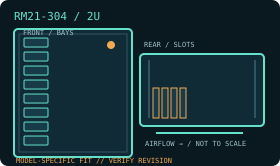

[ MODEL IDENTIFICATION // RM21-304 ]
SilverStone RM21-304 2U hot-swap chassis
A 2U rack chassis with model-specific drive, PSU and expansion layouts. Match the enclosure revision, backplane and rail kit before installation.

MODEL NOTE: This record covers the RM21-304 only. Options, revision-dependent PSU support and installed bay modules may change fit; verify labels and the manufacturer manual before buying replacement parts.
Dimensions & fit specifications
| Rack units / external dimensions | 2U; 430 × 88.5 × 480 mm (W × H × D); chassis body only, excluding rack rails and cable projection. |
|---|---|
| Motherboard compatibility | Micro-ATX (244 × 244 mm) and Mini-ITX (170 × 170 mm). |
| PSU / power compatibility | PS/2 ATX PSU up to 220 mm deep, or a compatible 2U single/redundant server PSU. Check PSU length against drive/cable placement; supply is not included. |
| Drive bays / backplane | Four 3.5-inch/2.5-inch hot-swap SAS/SATA bays using the model’s 4-port backplane; one internal 3.5-inch mount, one internal 2.5-inch mount (up to 15 mm) and a slim optical bay (up to 12.7 mm). Verify installed backplane and connector before ordering cables. |
| Riser / PCIe | Four low-profile PCI/PCIe slots. Use low-profile cards and confirm motherboard slot alignment/riser requirement for the selected board; a riser is not assumed included. |
| Cooling / service clearances | Three 80 × 15 mm PWM fan positions. CPU cooler height limit is 68 mm. Leave rear rack clearance for PSU plugs, drive-controller cables and exhaust airflow; 480 mm is the bare chassis depth. |
Compatibility & service notes
The 4-bay variant is distinct from RM21-308: check for the 4-drive backplane and matching tray count rather than fitting the 8-bay RM21-308 harness. Maintain rear service access for PSU and data cabling.
- Measure the complete installed depth: chassis, rack ears/slides, cable-management arm if fitted, connectors and cable bend radius.
- Maintain clear front intake and rear exhaust access; do not obstruct removable fan, drive, PSU or backplane service paths.
- Before hot-swap work, confirm the controller/backplane interface and follow the chassis manual’s power-down and ESD procedure.
Manufacturer sources
- SilverStone — RM21-304 product specificationsManufacturer page for the exact four-bay revision and its compatibility table.
- SilverStone — RM21-304 installation manual (PDF)Manufacturer installation documentation for the 2U chassis and drive layout.